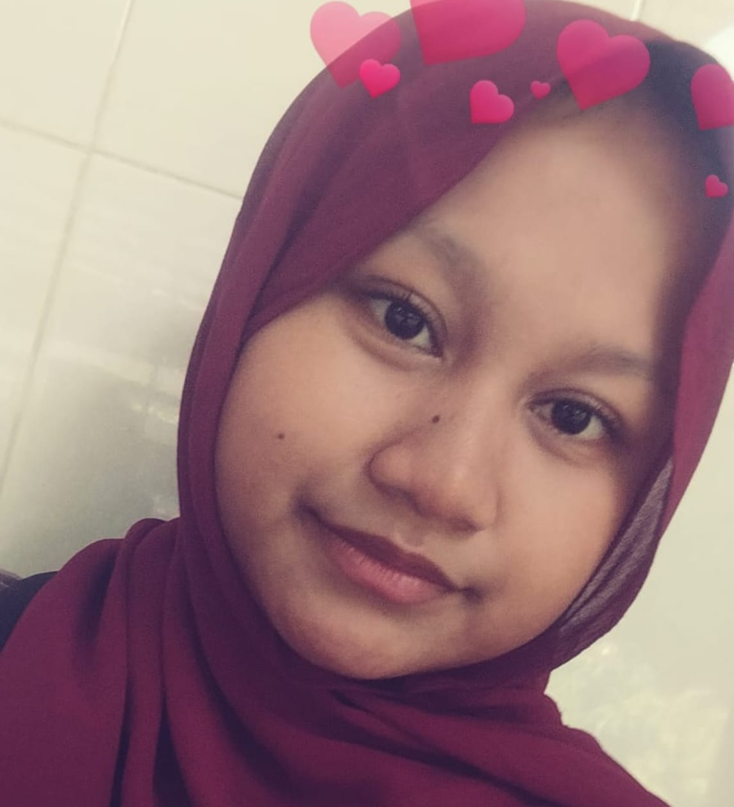
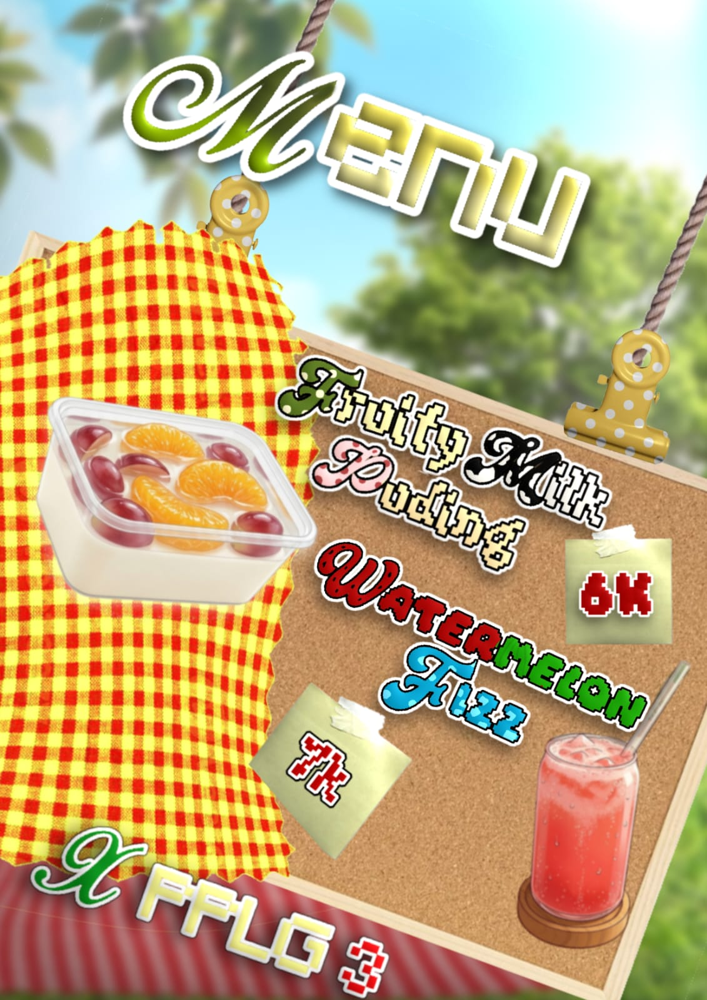
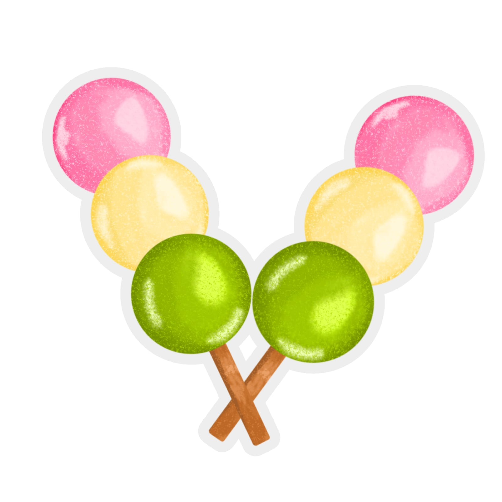
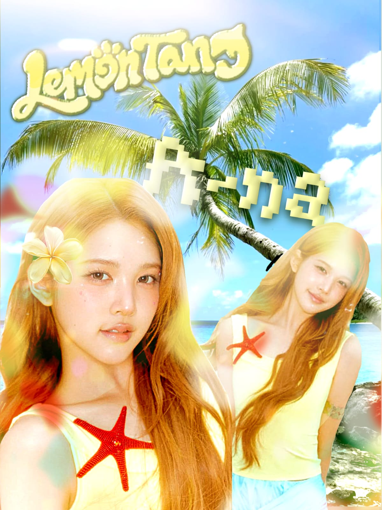
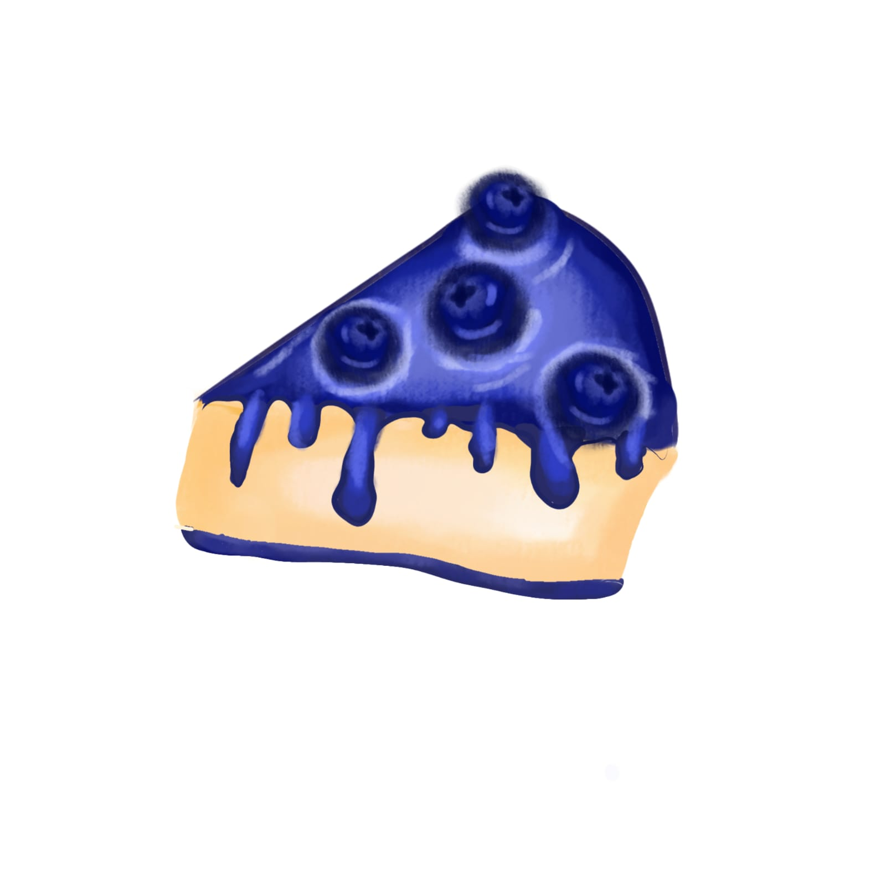

Halo! Saya Zahra Shafarani, seorang pelajar yang saat ini menempuh pendidikan di SMK dengan jurusan Pengembangan Perangkat Lunak dan Gim (PPLG). Meskipun saya mempelajari bidang pemrograman dan teknologi, saya juga memiliki ketertarikan yang cukup besar pada dunia menggambar, desain, dan digital art. Saya menikmati proses menuangkan ide dan kreativitas ke dalam bentuk visual. Saat ini saya masih dalam tahap belajar dan terus mencoba berbagai gaya serta teknik dalam membuat karya. Bagi saya, setiap karya merupakan bagian dari proses untuk mengembangkan kemampuan, mengeksplorasi kreativitas, dan menemukan gaya yang sesuai dengan diri saya. Portofolio ini berisi beberapa karya desain dan digital art yang saya buat selama proses belajar dan bereksplorasi.

Proyek desain menu makanan dan minuman untuk kegiatan bazar kelas. Desain ini menggabungkan tipografi dekoratif, warna cerah, serta elemen visual bertema piknik musim panas untuk menciptakan tampilan yang menarik dan sesuai dengan suasana bazar. Proyek ini menjadi penerapan kreativitas dalam merancang media promosi yang informatif sekaligus menarik secara visual.

Ilustrasi digital bertema mochi dango yang mengeksplorasi bentuk, warna, dan efek glossy untuk menciptakan visual makanan yang menarik. Perpaduan warna cerah dan detail dekoratif memberikan karakter unik pada karya, sekaligus menjadi media untuk mengembangkan kreativitas dan keterampilan ilustrasi digital.

Desain fan edit bertema musim panas yang menampilkan foto idol K-pop melalui perpaduan tipografi dekoratif, elemen tropis, dan warna-warna cerah. Penataan foto, pemilihan ornamen, serta kombinasi elemen grafis dirancang untuk menciptakan komposisi yang ekspresif dengan nuansa summer yang ceria dan playful.

Ilustrasi digital bertema blueberry cake yang mengeksplorasi perpaduan warna, detail dekoratif, dan bentuk untuk menghadirkan visual dessert yang menarik. Karya ini berfokus pada pengembangan kreativitas melalui pengolahan elemen visual menjadi ilustrasi yang memiliki karakter dan daya tarik tersendiri.
tuliskan saran dan kritik kalian